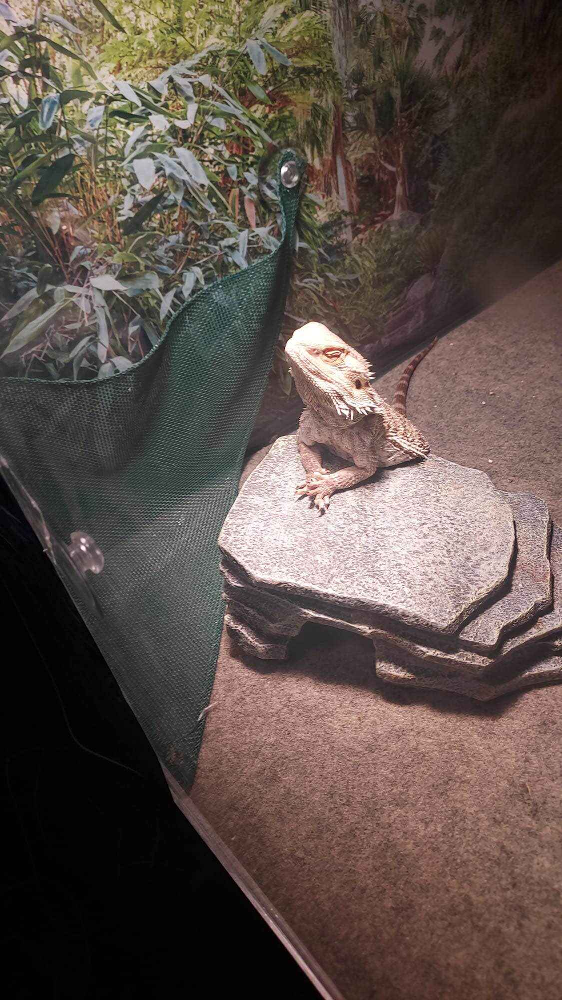
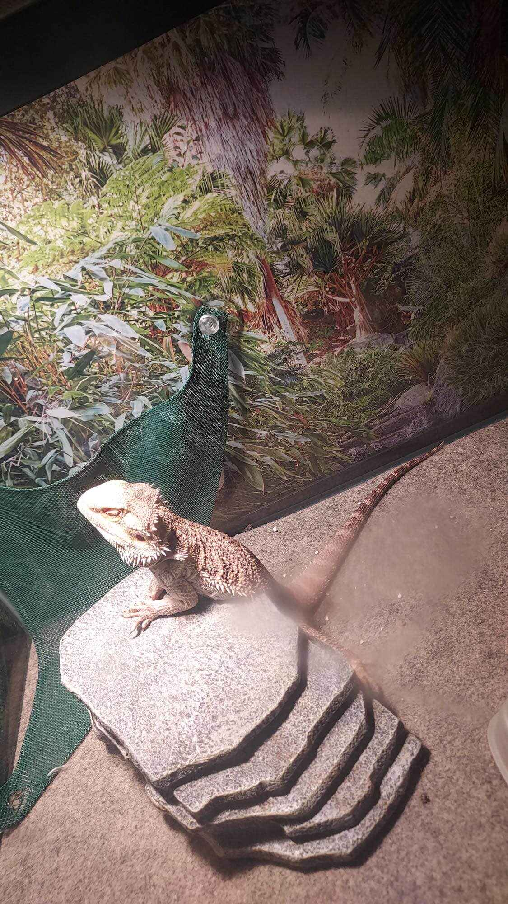
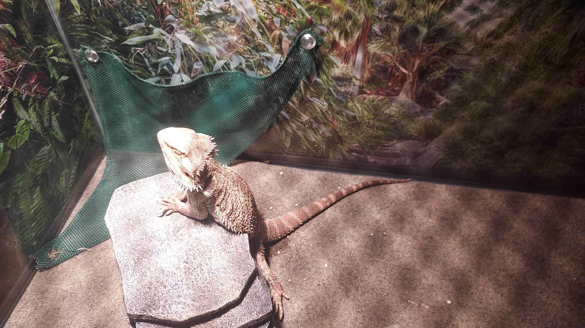

Meet beardie, the serene Bearded dragon who embodies calm and collected vibes! With his gentle demeanor and thoughtful presence, beardie brings a sense of tranquility to any space. He loves basking under his heat lamp, soaking up warmth while observing the world with his wise eyes. Whether he’s lounging on a sunny rock or exploring his habitat at a leisurely pace, beardie peaceful nature makes him a cherished companion. He may not be the fastest lizard in the room, but his calm charm and unique personality make every moment spent with him a delightful experience.
  